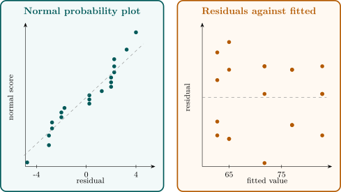

3.5 Model adequacy checking
The analysis of variance rests on the assumptions that the errors are independent and normally distributed with mean zero and a common variance. These are checked through the residuals \[ e_{ij} = y_{ij} - \hat y_{ij} = y_{ij} - \bar y_{i\cdot } , \] which estimate the errors. They are not quite the errors, as the next result shows.
Proposition 3.5.1. In the one-way model, \(E(e_{ij}) = 0\) and \(\Var (e_{ij}) = \sigma ^2(1 - 1/n_i)\), while \(\Cov (e_{ij}, e_{ik}) = -\sigma ^2/n_i\) for \(j \ne k\); residuals from different treatments are uncorrelated.
Proof. \(e_{ij} = \varepsilon _{ij} - \bar \varepsilon _{i\cdot }\), since \(\mu + \tau _i\) cancels. With \(\Cov (\varepsilon _{ij}, \bar \varepsilon _{i\cdot }) = \sigma ^2/n_i\) and \(\Var (\bar \varepsilon _{i\cdot }) = \sigma ^2/n_i\), \begin {align*} \Var (e_{ij}) &= \sigma ^2 - \frac {2\sigma ^2}{n_i} + \frac {\sigma ^2}{n_i} = \sigma ^2\Bigl (1 - \frac {1}{n_i}\Bigr ) , \\ \Cov (e_{ij}, e_{ik}) &= 0 - \frac {\sigma ^2}{n_i} - \frac {\sigma ^2}{n_i} + \frac {\sigma ^2}{n_i} = -\frac {\sigma ^2}{n_i} . \end {align*}
Residuals from different treatments involve disjoint sets of independent errors. □
So the residuals within a treatment are slightly negatively correlated (they sum to zero) and have slightly less variance than the errors. For plotting, they are usually scaled: the standardised residuals \(d_{ij} = e_{ij}/\sqrt {MSE}\), or the studentised residuals \(r_{ij} = e_{ij}/\sqrt {MSE(1 - 1/n_i)}\), which have variance close to \(1\). If the errors are normal, about \(95\%\) of them lie within \(\pm 2\), and a value beyond \(\pm 3\) marks a possible outlier.
Residual plots
- (i)
- A normal probability plot of the residuals checks normality. The ordered residuals \(e_{(1)} \le \dots \le e_{(N)}\) are plotted against the normal scores \(\Phi ^{-1}\bigl ((k - 0.5)/N\bigr )\); under normality the points lie near a straight line. Curvature suggests skewness, and an S shape suggests tails heavier or lighter than normal.
- (ii)
- Plotting the residuals against the fitted values \(\bar y_{i\cdot }\) checks that the variance is constant. The vertical spread should be the same at every fitted value. A spread that grows with the fitted value, a funnel, is the commonest violation, and is treated by transformation below.
- (iii)
- A plot of the residuals against time order checks independence. Runs of residuals of the same sign, or a trend, indicate correlation between successive runs, which randomisation of the run order is meant to prevent but cannot always.
Example 3.5.2. For the coating data the fitted values are the five coating means, and the residuals are
| coating | ||||
| \(1\) | \(-2.75\) | \(0.25\) | \(0.25\) | \(2.25\) |
| \(2\) | \(-2.00\) | \(-2.00\) | \(2.00\) | \(2.00\) |
| \(3\) | \(-4.75\) | \(0.25\) | \(2.25\) | \(2.25\) |
| \(4\) | \(-3.00\) | \(-3.00\) | \(2.00\) | \(4.00\) |
| \(5\) | \(-2.75\) | \(-1.75\) | \(1.25\) | \(3.25\) |
The largest standardised residual is \(-4.75/\sqrt {8.15} = -1.66\), so there are no outliers. Figure 5 shows the two main plots. The normal plot is close to a straight line, with a slight gap in the middle that is typical of four observations per group. The spread of the residuals does not change systematically with the fitted value. The assumptions look reasonable.

Tests for equality of variances
Formal tests of \(H_0 : \sigma _1^2 = \dots = \sigma _t^2\) supplement the plot.
Bartlett’s test. With \(S_i^2\) the sample variance of treatment \(i\) and \(S_p^2 = MSE\) the pooled variance, compute \begin {gather*} q = (N - t)\log _{10}S_p^2 - \sum _{i=1}^t(n_i - 1)\log _{10}S_i^2 , \\ c = 1 + \frac {1}{3(t - 1)}\Bigl (\sum _{i=1}^t\frac {1}{n_i - 1} - \frac {1}{N - t}\Bigr ) , \end {gather*} and \(\chi _0^2 = 2.3026\,q/c\). Under \(H_0\) and normality, \(\chi _0^2\) is approximately \(\chi ^2_{t-1}\), and \(H_0\) is rejected if \(\chi _0^2 > \chi ^2_{\alpha ,\,t-1}\).
The statistic is a likelihood ratio statistic. Up to the use of \(n_i - 1\) in place of \(n_i\), \(-2\log \Lambda = \sum (n_i - 1)\log (S_p^2/S_i^2)\), which is \(2.3026\,q\); it is zero when all the \(S_i^2\) are equal, because a weighted arithmetic mean exceeds the corresponding geometric mean unless the terms are equal, and it grows as they spread. The divisor \(c\) is Bartlett’s correction, which makes the \(\chi ^2\) approximation accurate even for small \(n_i\).
Levene’s test. Bartlett’s test is sensitive to non-normality: with heavy-tailed errors it rejects too often. Levene’s test, in the modified form of Brown and Forsythe, replaces each observation by its absolute deviation from the treatment median, \[ z_{ij} = |y_{ij} - \tilde y_i| , \] and applies the one-way analysis of variance \(F\) test to the \(z_{ij}\). Unequal variances show up as unequal mean absolute deviations. The test is robust to departures from normality.
Example 3.5.3. For the coating data, the sample variances are \(4.250\), \(5.333\), \(10.917\), \(12.667\) and \(7.583\), with \(S_p^2 = 8.15\), \(N - t = 15\) and \(n_i - 1 = 3\). Then \begin {align*} q &= 15\log _{10}8.15 - 3\bigl (\log _{10}4.250 + \dots + \log _{10}7.583\bigr ) = 0.5394 , \\ c &= 1 + \frac {1}{12}\Bigl (\frac 53 - \frac {1}{15}\Bigr ) = 1.1333 , \end {align*}
and \(\chi _0^2 = 2.3026(0.5394)/1.1333 = 1.096\), far below \(\chi ^2_{0.05,4} = 9.49\) (\(p = 0.89\)). Levene’s test gives \(F_0 = 0.756\) on \(4\) and \(15\) degrees of freedom (\(p = 0.57\)). Neither test finds any evidence of unequal variances.
Remark. How much do violations matter? Non-normality matters little for the \(F\) test of equal means, which is robust for the same reason as the \(t\) test. Unequal variances matter little when the design is balanced, but can seriously distort the level when the \(n_i\) differ, especially if the smaller groups have the larger variances. Correlated errors matter most of all, and cannot be repaired by any analysis; that is why randomisation is a part of the design.
Questions on this section
Stuck on something here? Ask below and it stays attached to this topic.